Hacking Games
in a
Hacked Game
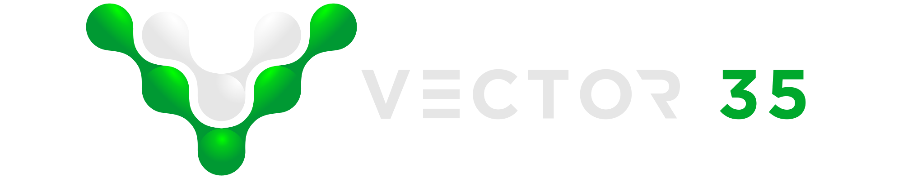
BIO
- CTF junkies
- Worked for Raytheon SI
- Quit and founded Vector 35 to do "CTF stuff"
Is this talk for you?
- Did you play Pwn Adventure 3 during Ghost in the Shellcode this year?
- Have you ever played a CTF before?
- Have you heard of CTFs before?
- Have you played or hacked a video game?
Questions?
Join Us!
First 15 people using the code April172015 on SSID InfiltrateSpeaker get working
internet in the room for the day.
(MITM DMG injection free of charge courtesy of @patrickwardle)
- http://pwnadventure.com/
- Download client (GPU recommended)
- Online demo at the end of the talk
Motivation
Game Industry Profits

Hacking (in?) the Game Industry
- As old as the game industry itself
- Led to the rise of the demo scene, cracking, trainers, etc
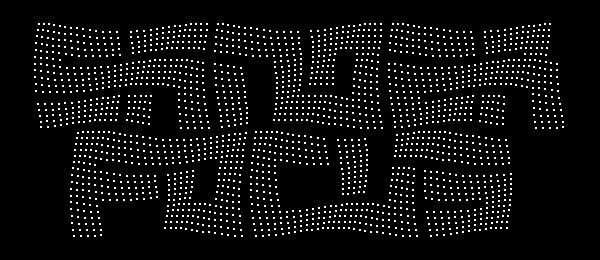
Notable Examples
- BNET.D (interop)
- Glider (interop)
- Diablo 3 Auction House (vuln)
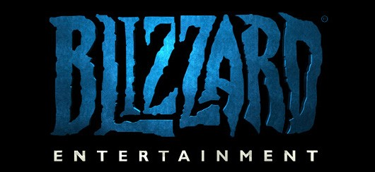
Code-Signing
- Game platforms as early bellwethers
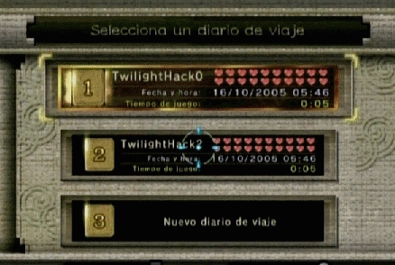 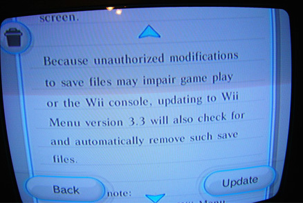
TAS Total Control
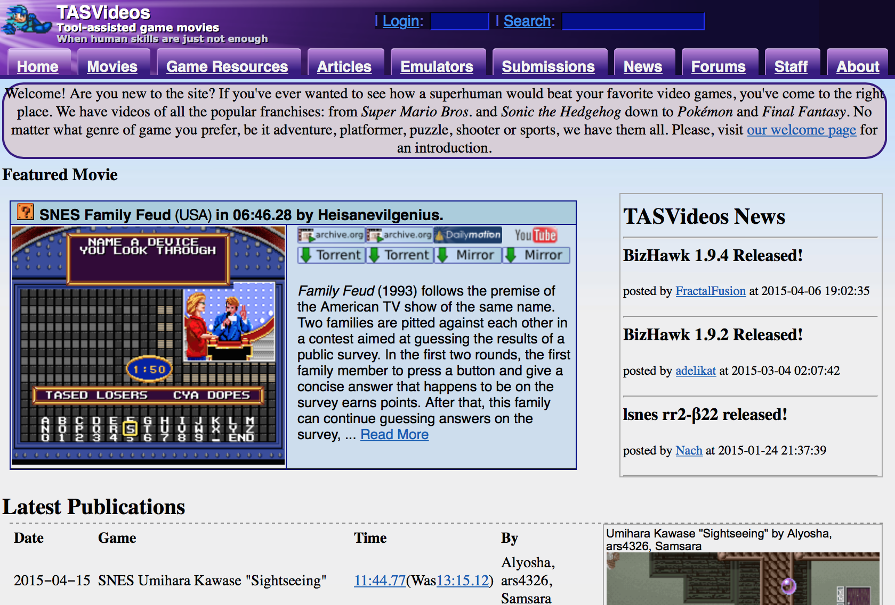
TASBot
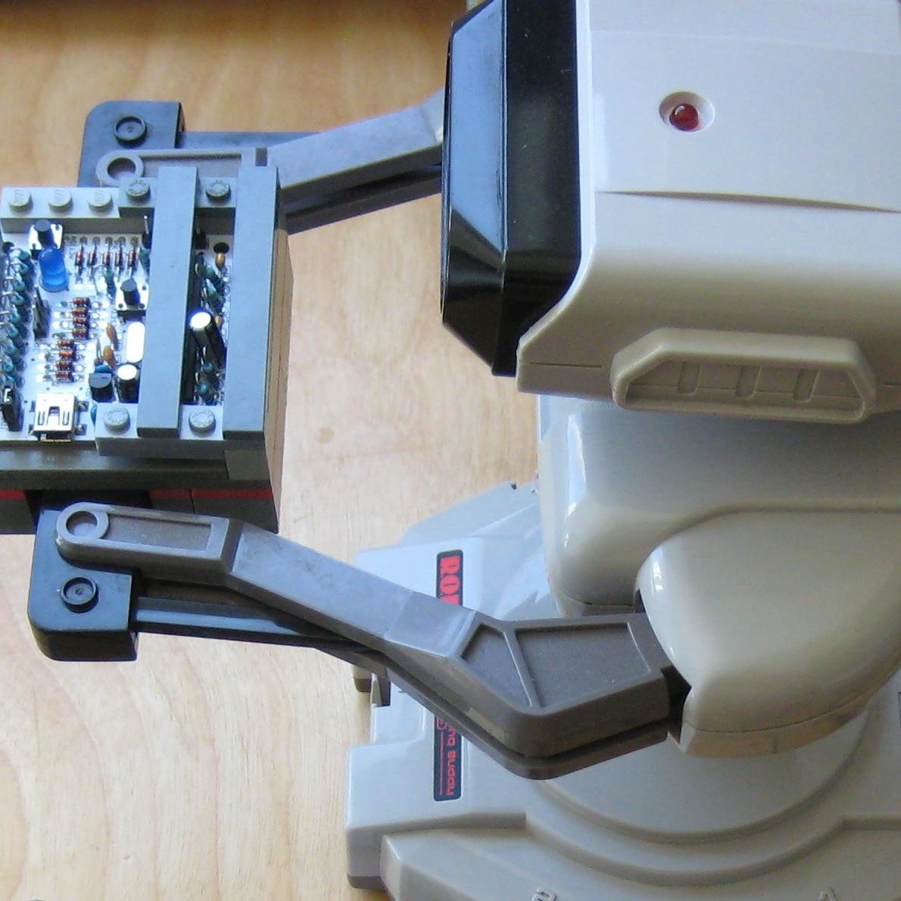
AGDQ 2015
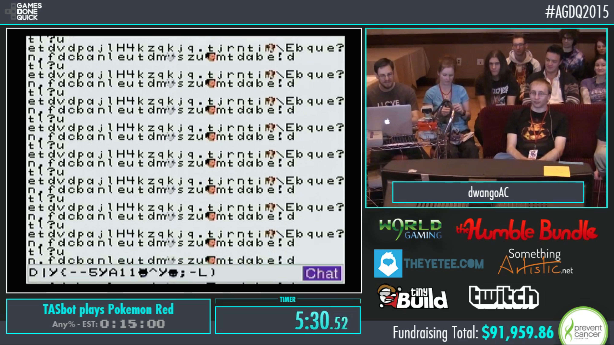
Growth of CTFs
Brief History of CTFs
Basics
- Red Team (Jeopardy Style)
- Blue Team ("Defensive")
- Full Spectrum (or Attack/Defense)
- WarGames
DEF CON
- One of the earliest (1996)
- Beginning of "modern" A/D (2004/2005)
- Kenshoto (2005-2009)
- DDTEK (2010-2013)
- LegitBS (2014-Current)
Real World Bugs

fighting for equality
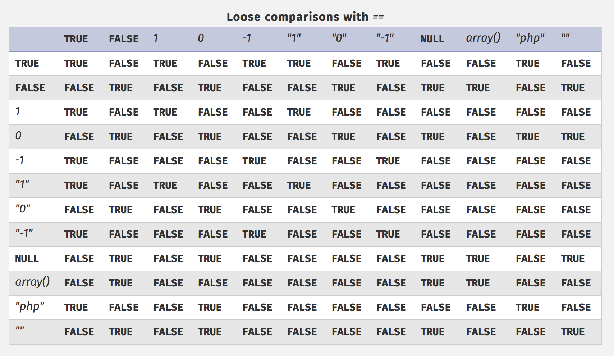
type coercion
<?php $key = "key{XXXXXXXXXXXXXXXXXXXXXXXXXXXXXXXXXXXXXXXXXXXXXXXXXXX}"; $pass = "XXXXXXXXXXXXXXXXXXXXXXXXXXXXXXXXXXXXXXXXXXXXXXXXXXXXXXXXXXXXXXX"; if ( strcasecmp( $_GET['pass'], $pass ) == 0 ) { echo($key); } ?>
php-cgi
go go!
Bunyan's Revenge (PlaidCTF 2013)
case ODOTPTR: cgen(nl, res); + // explicit check for nil if struct is large enough + // that we might derive too big a pointer. + if(nl->type->type->width >= unmappedzero) { + regalloc(&n1, types[tptr], res); + gmove(res, &n1); + n1.op = OINDREG; + n1.type = types[TUINT8]; + n1.xoffset = 0; + gins(ATESTB, nodintconst(0), &n1); + regfree(&n1); + } if(n->xoffset != 0) { - // explicit check for nil if struct is large enough - // that we might derive too big a pointer. - if(nl->type->type->width >= unmappedzero) { - regalloc(&n1, types[tptr], res); - gmove(res, &n1); - n1.op = OINDREG; - n1.type = types[TUINT8]; - n1.xoffset = 0; - gins(ATESTB, nodintconst(0), &n1); - regfree(&n1); - } ginscon(optoas(OADD, types[tptr]), n->xoffset, res);
Pirate Danbi
- TLV protocol
- bzip2
- https://git.io/vvETK (ctf writeup repository)
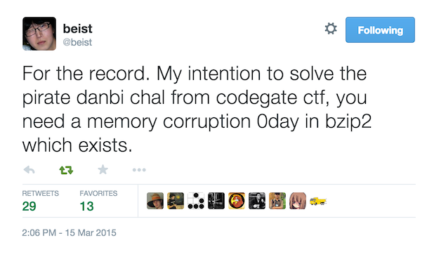
lollerskaters privesc
=============================================================================
FreeBSD-SA-11:05.unix Security Advisory
The FreeBSD Project
Topic: Buffer overflow in handling of UNIX socket addresses
Category: core
Module: kern
Announced: 2011-09-28
Credits: Mateusz Guzik
Affects: All supported versions of FreeBSD.
[...]
II. Problem Description
When a UNIX-domain socket is attached to a location using the bind(2)
system call, the length of the provided path is not validated. Later,
when this address was returned via other system calls, it is copied into
a fixed-length buffer.
Linux uses a larger socket address structure for UNIX-domain sockets
than FreeBSD, and the FreeBSD's linux emulation code did not translate
UNIX-domain socket addresses into the correct size of structure.
wireshark 0day
guesspw
- challenge from codegate CTF
inputfile = realpath(argv[1]); if (strstr(inputfile,"password") || strstr(inputfile,"flag")) { goto fail; } password = read(open("/home/guesspw/password")); attempt = read(open(inputfile)); if (strcmp(password,attempt)) { system("/bin/sh"); }
guesspw solutions
- /dev/fd/3
- race condition (TOCTTOU)
- MAXSYMLINKS (SYMLOOP＿PMAX)
real-world example
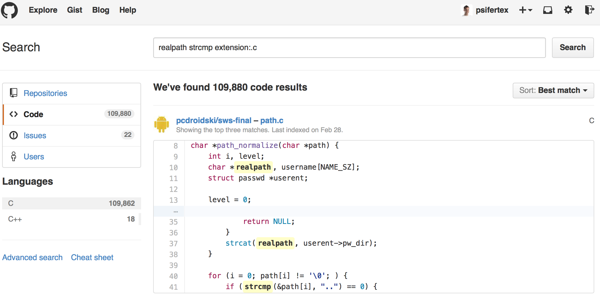
bound payloads / chflags
Free Tools!
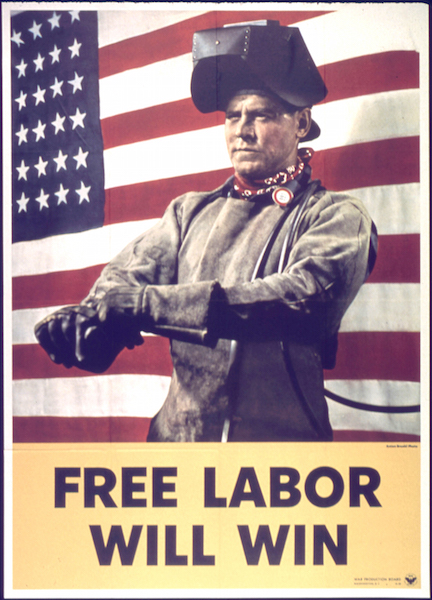
CTF Gaming Challenges
(a most certainly non-exhaustive list)
________
/ ____/ /_ ____ ____ ________ __ ______ __ _______
/ / / __ \/ __ \/ __ \/ ___/ _ \ / / / / __ \/ / / / ___/
/ /___/ / / / /_/ / /_/ (__ ) __/ / /_/ / /_/ / /_/ / /
\____/_/ /_/\____/\____/____/\___/ \__, /\____/\__,_/_/
____ ___ __ /____/ __
/ __ \_ ______ / | ____/ / _____ ____ / /___ __________
/ /_/ / | /| / / __ \ / /| |/ __ / | / / _ \/ __ \/ __/ / / / ___/ _ \
/ ____/| |/ |/ / / / / / ___ / /_/ /| |/ / __/ / / / /_/ /_/ / / / __/
/_/ |__/|__/_/ /_/ /_/ |_\__,_/ |___/\___/_/ /_/\__/\__,_/_/ \___/
You hold in your hands a map to a vast treasure under the mountain. Your
desire to be rich far outweighs your desire to cooperate with others, so
you are obviously going on this quest alone, with only your wits and your
awesome hacker magic to aid you.
You start your quest on a road just outside of town.
You feel a strange forboding feeling eminating from the map, like it has
an alien magic all of its own.
What do you do?
1) Follow the road toward the mountain.
2) Turn around and ask the mage in town what is going on.
Choice:
Blocky
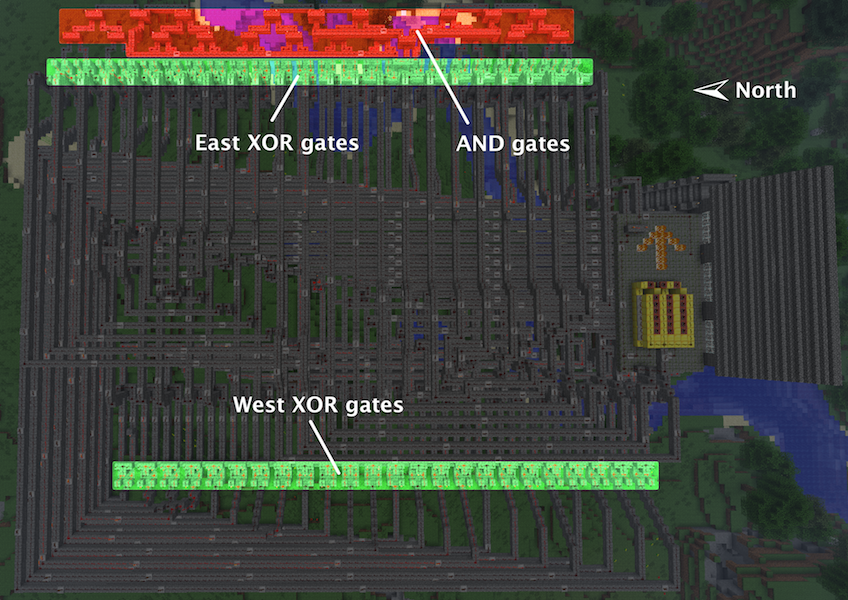
Blocky
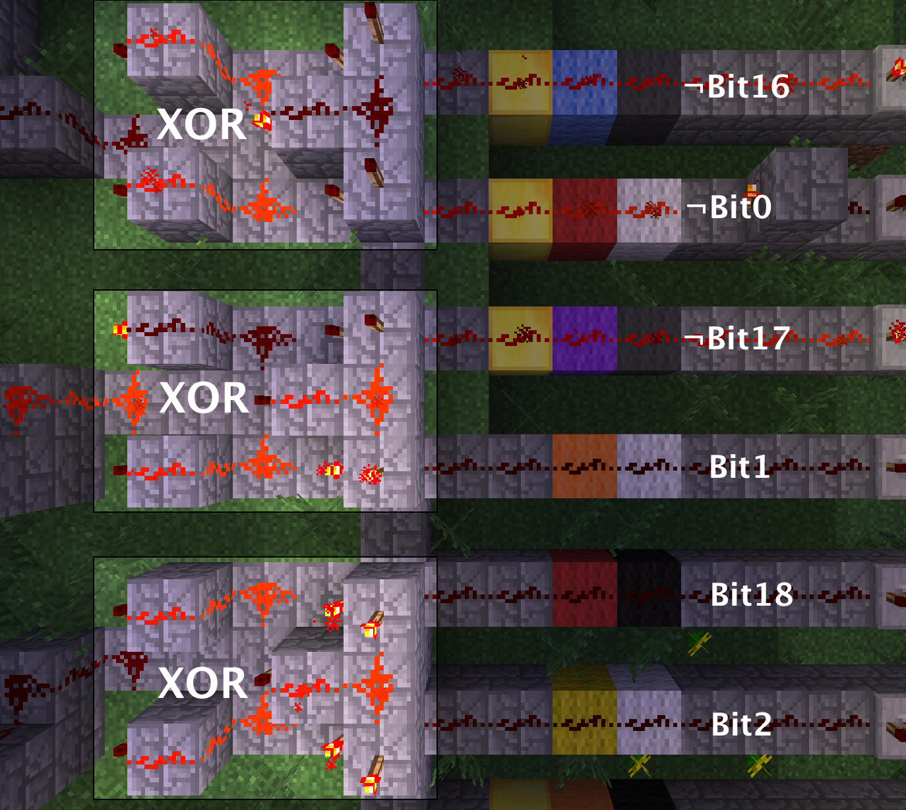
Escape from Minecraft
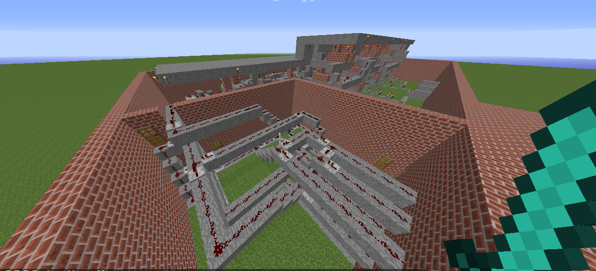
Plaid CTF v1
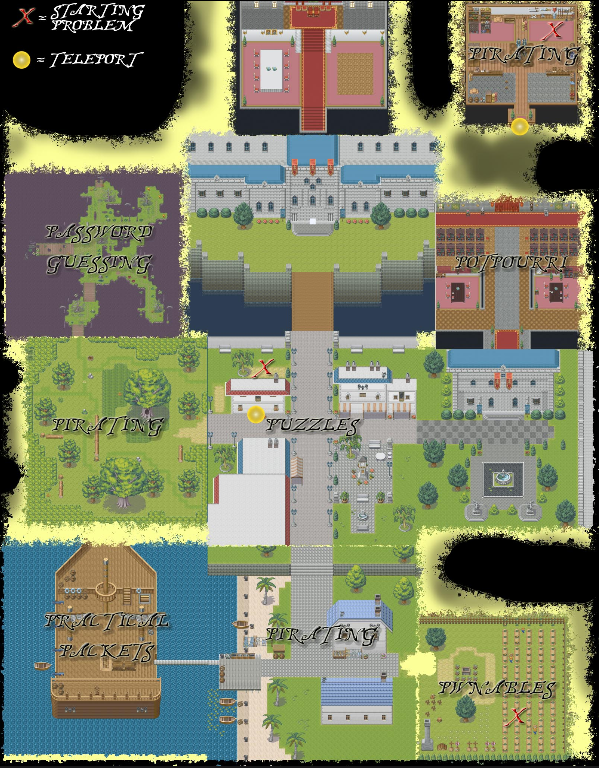
Plaid CTF v2
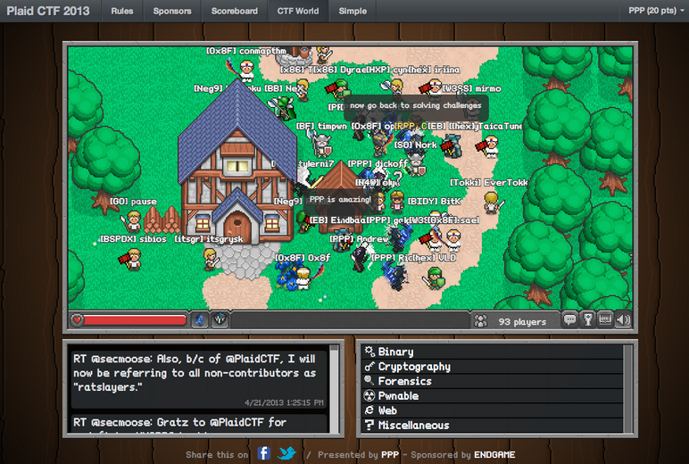
Pwn Adventure (2)
Pwn Adventure 3 Demo
Challenges
- Unbearable Revenge
- Fire and Ice
- Overachiever
- Until the Cows Come Home
- Pirate's Treasure
- Blocky's Revenge
- Egg Hunt
3rd Party Hacks
LD＿PRELOAD
Wireshark Dissector
-- gits.lua -- A wireshark plug-in to reverse engineer PwnAdventure 3 traffic -- -- http://pwnadventure.com/ for more information. -- -- eric.gragsone@erisresearch.org gits_proto=Proto("GitS", "Pwn Adventure 3") function addLocation(tvb, pos, tree) local branch branch=tree:add(tvb(pos,12), "Location") branch:add(tvb(pos,4), "X Coordinates: "..tvb(pos,4):le_uint()) branch:add(tvb(pos+4,4), "Y Coordinates: "..tvb(pos+4,4):le_uint()) branch:add(tvb(pos+8,4), "Z Coordinates: "..tvb(pos+8,4):le_uint()) end
PwnAdventure3Hacks Github
- DirectX Overlay
- github.com/zku/PwnAdventure3Hacks
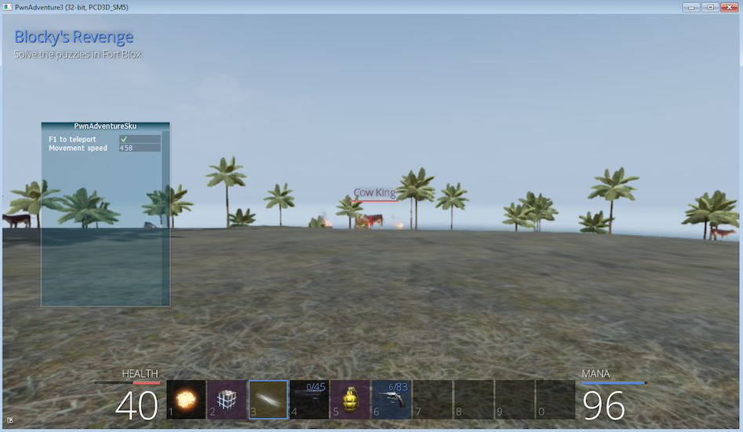
Samurai PwnHax.cpp
gist.github.com/dropkickgit/2b65c0ac18506e5c5f0f
#include <Windows.h> #include <detours.h> #include <fstream> #include <cstdio> #include <cstdlib> #pragma comment(lib, "detours.lib") // Classes class TCPSocket {}; class Player {}; class Actor {}; // Structs struct Vector3 { float x, y, z; }; // Typedefs typedef bool(__thiscall *SendFunc)(TCPSocket *, const void*, unsigned int); typedef bool(__thiscall *RecvFunc)(TCPSocket *, void*, unsigned int); typedef bool(__thiscall *CanJumpFunc)(Player *); typedef bool(__thiscall *PlayerChatFunc)(Player *, const char *); typedef void(__thiscall *PlayerFastTravelFunc)(Player *, const char *, const char *); typedef void(__thiscall *ActorSetPositionFunc)(Actor *, Vector3 *); // Globals SendFunc RealSend; RecvFunc RealRecv; CanJumpFunc RealCanJump; PlayerChatFunc RealChat; PlayerFastTravelFunc PlayerFastTravel; ActorSetPositionFunc ActorSetPosition; Player *playerObj = 0; TCPSocket *clientSock = 0; std::ofstream DbgLogger;
Unintended Bugs
OmniTheft
Bearly Assasinated
Flying Bodies
Eggcellent Solution
Cheat Engine
Spelunking
Useful CTF Tools
- xortool github.com/hellman/xortool
- pwntools github.com/Gallopsled/pwntools
- qira github.com/BinaryAnalysisPlatform/qira / qira.me
More CTF Resources
- ctftime.org - Events, team scores, writeups
- captf.com - dump site, mirrors, calendar
- golden-flags.com - yearly CTF awards
- github.com/ctfs - best maintained collection of writeups
Meta
Thanks to:
Dragon Sector Escape from Minecraft Writeup used with Permission:
http://blog.dragonsector.pl/2014/02/ph4quals-escape-from-minecraft.html
Made with:
Spacemacs: https://github.com/syl20bnr/spacemacs
Org-Reveal: Export from org-mode straight to reveal.js html5 presentations:
https://github.com/yjwen/org-reveal
Using images from:
Free Labor Image: https://www.flickr.com/photos/donkeyhotey/5501554002 (CC BY)
Toy Soldiers: http://www.flickr.com/photos/janramroth/2264184078/ (CC BY)
Any Bonds Today: http://en.wikipedia.org/wiki/Any_Bonds_Today (PD)
It's Got Me Again: http://en.wikipedia.org/wiki/It%27s_Got_Me_Again! (PD)
Confused: https://flickr.com/photos/83633410@N07/7658225516 (CC BY-SA)
Bugs: https://www.flickr.com/photos/jurvetson/3097134746/ (CC BY)
Thief: https://www.flickr.com/photos/fhke/3335949405 (CC BY-SA)
Golden Gun: https://www.flickr.com/photos/mrgarethm/14592496766 (CC BY)
Flying: https://www.flickr.com/photos/scion02b/2765655302/ (CC BY)
Eggs: https://www.flickr.com/photos/erix/131405474/ (CC BY)
Engine: https://www.flickr.com/photos/michchap/14607705463/ (CC BY)
Cave: https://www.flickr.com/photos/watchsmart/2059057874 (CC BY)
Bees: http://wikimedia.org/wiki/File:-_Bee_swarm_on_a_bicycle_(1-5)_-.jpg
(CC BY-SA)
- Slides: github.com/vector35/HackingGames
- Binary Ninja: binary.ninja